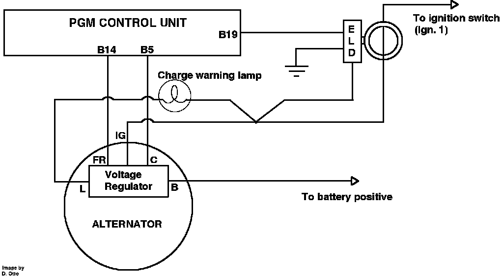

Electric Load Sensor: Description and Operation
Alternator Control:

The electric load detector (ELD) is incorporated into the main fuse box in the engine compartment. The ELD functions much like an ammeter. It consists of an inductive coil and some support circuitry. It senses current flowing through ignition terminal 1 (Ign. 1), and generates a low voltage signal based upon the current load and direction of flow. The ELD signal is then sent to the ECU at pin B19, where it is used along with the FR signal to modify alternator output to stabilize idle speed to compensate for electrical load.